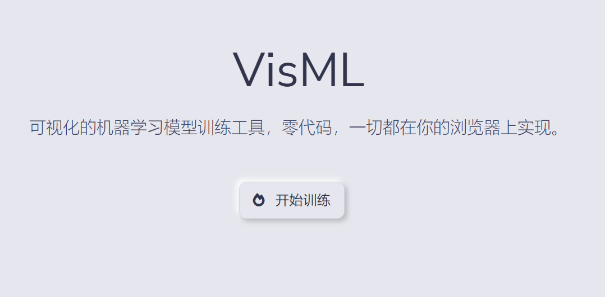
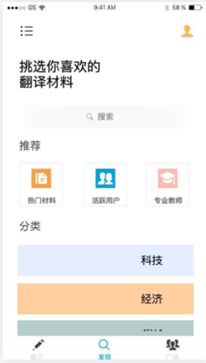

Projects
June 2022

Fake News on COVID-19 Detection
As a natural language processing project, this project aims to detect fake news on COVID 19 on Twitter as much as possible.
Github, Liming Luo
January 2022
VisML
A machine learning model training platform with your own device with Tensorflow.js
Github, Liming Luo
iTrans - a Translation Practice Application for English Learners
iTrans is an on-line learning platform based on a virtual server and cloud database. It aims to help users practice translating on cards and improve their translation skills with desired English materials.